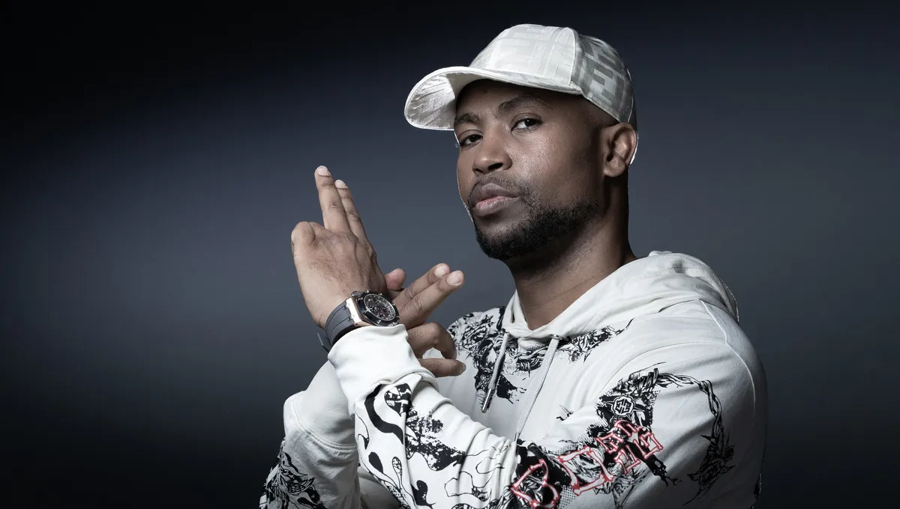
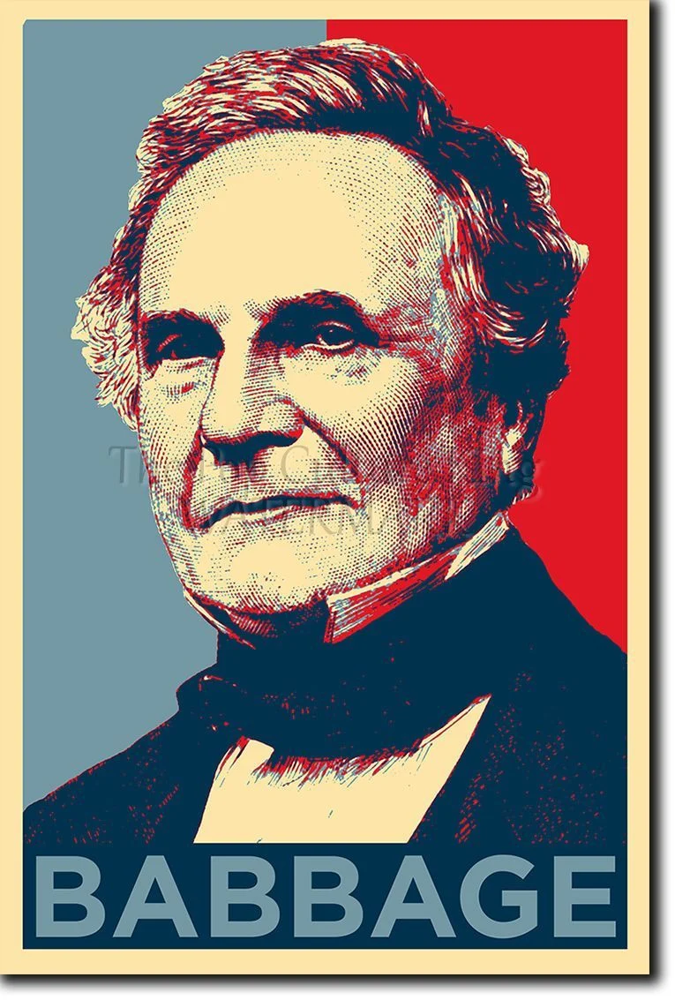

Rohff
Rohff, de son vrai nom Housni Mkouboi, est l'une des figures emblématiques du rap français. Né le 15 décembre 1977 aux Comores, il a grandi à Vitry-sur-Seine, en banlieue parisienne. Sa carrière, débutée dans les années 1990, est marquée par des succès commerciaux, des albums à la plume incisive, et des rivalités notoires.

Jul
ul est devenu une figure incontournable du rap français. Son indépendance (avec son label D’or et de platine) et sa productivité inspirent de nombreux artistes. En tant qu’icône populaire, il reste proche de son public tout en innovant constamment.
Avec une carrière en constante évolution, Jul est aujourd'hui un pilier de la musique urbaine française et un symbole de la réussite dans le rap indépendant.

Charles Babbage
Charles Babbage est né à Londres le 26 décembre 1792; il est le fils de Benjamin Babbage, banquier. Il entreprit très tôt des études de mathématiques et se trouva être d'un niveau supérieur à ses enseignants lorsqu'il entra en 1811 au Trinity College à Cambrigde. Avec Herschel, Peacock et quelques autres, Babbage fonda The Analytical Society afin de promouvoir les mathématiques continentales et de réformer les mathématiques de Newton enseignées à cette époque. A 20 ans, Babbage travailla en tant que mathématicien, principalement dans le calcul des fonctions. En 1816 il fut proclamé membre, à 24 ans, de la Royal Society et joua un rôle déterminant dans la création de l'Astronomical Society en 1820, qui devint plus tard la Royal Astronomical Society. C'est à cette époque que Babbage se découvrit une passion dévorante pour les machines à calculer.